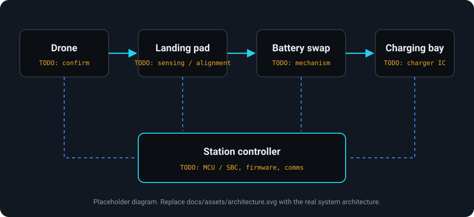

Autonomous landing
Sensors and cameras guide the drone onto the station.
CPE 423 Senior Design
An autonomous ground station that lands drones, swaps their batteries mechanically, and recharges the used packs, so drone fleets can keep operating without human intervention.
Team:
Our mission & story
You have likely heard about the immense promise of drone delivery. But if you look up, the sky is empty.
The entire industry is fundamentally limited by battery life.
Despite billions invested in aircraft technology, most commercial drones are paralyzed by a strict 15-mile limit. Pushing beyond that radius introduces the severe risk of mid-flight battery failure, destroying delivery reliability. Furthermore, standard charging takes hours. This forces drones to sit idle on the ground, creating extensive fleet downtime and crippling the economics of rapid delivery.
Scaling the future of delivery shouldn't require building complicated, heavily staffed launch hubs in our backyards. It should rely on a seamless, compact network.
That is why we built Node.
Why we're different
We have all seen electric vehicle charging stations expand all over the country; we decided to take the concept to the skies. But we are taking a different route: instead of forcing the drone to sit and wait for its battery to charge, our stations physically remove the depleted battery and replace it with a fully charged one for significantly less downtime.
As four graduating engineering students, we analyzed the UAV market and recognized a critical gap in this industry. Most businesses focus on traditional charging stations rather than what we envision at Node; we are engineering a faster way for the drones to take off, bypassing the wait time.
The rise of autonomous drone technology has enabled many use case scenarios; however, they are very limited by their battery longevity, thus limiting their capabilities. By providing a way to extend a drone’s travel distance without sacrificing time, drones will be able to expand their usage capabilities without being limited by their battery size.
To address this, the goal of this senior design project is to build a working prototype station that will swap a drone's battery without any (if possible) human involvement. The station will guide the drone to land using sensors and cameras, then swap the drone's depleted battery for one that is sufficiently charged. This will be paired with a monitoring system that will report and track landing records, station status, and battery levels.
By the end of the project, the team is aiming to provide a final report, a working prototype, and a video demonstration of the working drone station (landing, battery swapping, and monitoring/reporting inside an indoor environment).
Sensors and cameras guide the drone onto the station.
A mechanism exchanges the depleted pack for a charged one.
TODO: mechanism type and swap sequenceUsed packs are recharged on the station for the next swap.
TODO: charging method and pack capacityReports and tracks landing records, station status, and battery levels.
Demo
How it works
The diagram below is a placeholder showing the subsystems implied by the project summary.
TODO: replace the placeholder diagram and confirm the subsystem breakdown
Results
Measured results from testing will go here.
TODO: fill every metric below from real test data, and rename labels to match what you actually measuredTeam
Questionnaire
We're gathering opinions on autonomous drone delivery to guide how we design Node.
A short Google Form about how familiar you are with drone delivery, how far you think drones can fly, and what you'd value in longer-range delivery.
Take the questionnaireResources